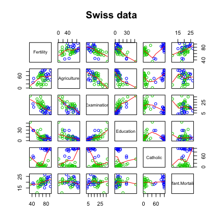

library(datasets); data(swiss); require(stats); require(graphics)
pairs(swiss, panel = panel.smooth, main = "Swiss data", col = 3 + (swiss$Catholic > 50))

Brian Caffo, PhD
Johns Hopkins Bloomberg School of Public Health
library(datasets); data(swiss); require(stats); require(graphics)
pairs(swiss, panel = panel.smooth, main = "Swiss data", col = 3 + (swiss$Catholic > 50))
?swissStandardized fertility measure and socio-economic indicators for each of 47 French-speaking provinces of Switzerland at about 1888.
A data frame with 47 observations on 6 variables, each of which is in percent, i.e., in [0, 100].
All variables but ‘Fertility’ give proportions of the population.
lmsummary(lm(Fertility ~ . , data = swiss))
Estimate Std. Error t value Pr(>|t|)
(Intercept) 66.9152 10.70604 6.250 1.906e-07
Agriculture -0.1721 0.07030 -2.448 1.873e-02
Examination -0.2580 0.25388 -1.016 3.155e-01
Education -0.8709 0.18303 -4.758 2.431e-05
Catholic 0.1041 0.03526 2.953 5.190e-03
Infant.Mortality 1.0770 0.38172 2.822 7.336e-03
summary(lm(Fertility ~ Agriculture, data = swiss))$coefficients
Estimate Std. Error t value Pr(>|t|)
(Intercept) 60.3044 4.25126 14.185 3.216e-18
Agriculture 0.1942 0.07671 2.532 1.492e-02
How can adjustment reverse the sign of an effect? Let's try a simulation.
n <- 100; x2 <- 1 : n; x1 <- .01 * x2 + runif(n, -.1, .1); y = -x1 + x2 + rnorm(n, sd = .01)
summary(lm(y ~ x1))$coef
Estimate Std. Error t value Pr(>|t|)
(Intercept) 1.955 1.161 1.684 9.534e-02
x1 95.621 1.996 47.899 8.363e-70
summary(lm(y ~ x1 + x2))$coef
Estimate Std. Error t value Pr(>|t|)
(Intercept) 0.002382 0.0020911 1.139 2.575e-01
x1 -1.018909 0.0176964 -57.577 8.321e-77
x2 1.000146 0.0001794 5574.023 7.717e-269
z adds no new linear information, since it's a linear combination of variables already included. R just drops terms that are linear combinations of other terms.
z <- swiss$Agriculture + swiss$Education
lm(Fertility ~ . + z, data = swiss)
Call:
lm(formula = Fertility ~ . + z, data = swiss)
Coefficients:
(Intercept) Agriculture Examination Education Catholic
66.915 -0.172 -0.258 -0.871 0.104
Infant.Mortality z
1.077 NA
summary(lm(count ~ spray, data = InsectSprays))$coef
Estimate Std. Error t value Pr(>|t|)
(Intercept) 14.5000 1.132 12.8074 1.471e-19
sprayB 0.8333 1.601 0.5205 6.045e-01
sprayC -12.4167 1.601 -7.7550 7.267e-11
sprayD -9.5833 1.601 -5.9854 9.817e-08
sprayE -11.0000 1.601 -6.8702 2.754e-09
sprayF 2.1667 1.601 1.3532 1.806e-01
summary(lm(count ~
I(1 * (spray == 'B')) + I(1 * (spray == 'C')) +
I(1 * (spray == 'D')) + I(1 * (spray == 'E')) +
I(1 * (spray == 'F'))
, data = InsectSprays))$coef
Estimate Std. Error t value Pr(>|t|)
(Intercept) 14.5000 1.132 12.8074 1.471e-19
I(1 * (spray == "B")) 0.8333 1.601 0.5205 6.045e-01
I(1 * (spray == "C")) -12.4167 1.601 -7.7550 7.267e-11
I(1 * (spray == "D")) -9.5833 1.601 -5.9854 9.817e-08
I(1 * (spray == "E")) -11.0000 1.601 -6.8702 2.754e-09
I(1 * (spray == "F")) 2.1667 1.601 1.3532 1.806e-01
lm(count ~
I(1 * (spray == 'B')) + I(1 * (spray == 'C')) +
I(1 * (spray == 'D')) + I(1 * (spray == 'E')) +
I(1 * (spray == 'F')) + I(1 * (spray == 'A')), data = InsectSprays)
Call:
lm(formula = count ~ I(1 * (spray == "B")) + I(1 * (spray ==
"C")) + I(1 * (spray == "D")) + I(1 * (spray == "E")) + I(1 *
(spray == "F")) + I(1 * (spray == "A")), data = InsectSprays)
Coefficients:
(Intercept) I(1 * (spray == "B")) I(1 * (spray == "C")) I(1 * (spray == "D"))
14.500 0.833 -12.417 -9.583
I(1 * (spray == "E")) I(1 * (spray == "F")) I(1 * (spray == "A"))
-11.000 2.167 NA
summary(lm(count ~ spray - 1, data = InsectSprays))$coef
Estimate Std. Error t value Pr(>|t|)
sprayA 14.500 1.132 12.807 1.471e-19
sprayB 15.333 1.132 13.543 1.002e-20
sprayC 2.083 1.132 1.840 7.024e-02
sprayD 4.917 1.132 4.343 4.953e-05
sprayE 3.500 1.132 3.091 2.917e-03
sprayF 16.667 1.132 14.721 1.573e-22
unique(ave(InsectSprays$count, InsectSprays$spray))
[1] 14.500 15.333 2.083 4.917 3.500 16.667
spray2 <- relevel(InsectSprays$spray, "C")
summary(lm(count ~ spray2, data = InsectSprays))$coef
Estimate Std. Error t value Pr(>|t|)
(Intercept) 2.083 1.132 1.8401 7.024e-02
spray2A 12.417 1.601 7.7550 7.267e-11
spray2B 13.250 1.601 8.2755 8.510e-12
spray2D 2.833 1.601 1.7696 8.141e-02
spray2E 1.417 1.601 0.8848 3.795e-01
spray2F 14.583 1.601 9.1083 2.794e-13
Equivalently \[Var(\hat \beta_B - \hat \beta_C) = Var(\hat \beta_B) + Var(\hat \beta_C) - 2 Cov(\hat \beta_B, \hat \beta_C)\]
fit <- lm(count ~ spray, data = InsectSprays) #A is ref
bbmbc <- coef(fit)[2] - coef(fit)[3] #B - C
temp <- summary(fit)
se <- temp$sigma * sqrt(temp$cov.unscaled[2, 2] + temp$cov.unscaled[3,3] - 2 *temp$cov.unscaled[2,3])
t <- (bbmbc) / se
p <- pt(-abs(t), df = fit$df)
out <- c(bbmbc, se, t, p)
names(out) <- c("B - C", "SE", "T", "P")
round(out, 3)
B - C SE T P
13.250 1.601 8.276 0.000